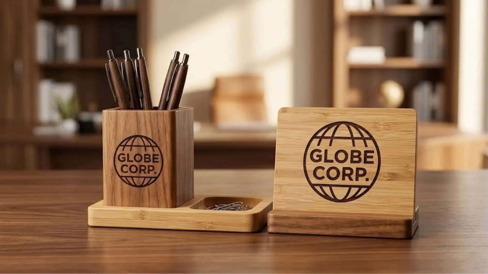

Apa Perbedaan Karakter Bahan Stainless, Kayu, dan Bambu pada Merchandise Kantor Logo?
Perbedaan utama terletak pada kesan visual dan sifat fisiknya, di mana stainless memberikan kesan modern dan kokoh, kayu memberikan kesan hangat dan klasik, sedangkan bambu memberikan kesan natural dan ringan.
Stainless steel dikenal karena permukaannya yang mengkilap, tahan terhadap goresan ringan, dan memberikan kesan profesional yang cocok untuk produk seperti tumbler, gantungan kunci, atau alat tulis metal.
Kayu solid, di sisi lain, memiliki serat alami yang membuat setiap produk terlihat unik, sering digunakan untuk plakat, pen holder, atau desk set yang ingin menonjolkan kesan hangat dan berkelas.
Bambu memiliki karakter yang lebih ringan dibandingkan kayu solid, dengan warna cenderung lebih terang, dan sering dipilih sebagai bahan yang dianggap lebih ramah lingkungan untuk produk seperti tempat pensil, nampan meja, atau organizer dokumen.
Bahan Apa yang Paling Tahan Lama untuk Merchandise Kantor Logo?
Secara umum, stainless steel dianggap sebagai bahan yang paling tahan lama untuk penggunaan harian karena ketahanannya terhadap goresan, kelembapan, dan perubahan suhu dibandingkan kayu maupun bambu.
Meski demikian, daya tahan kayu dan bambu tetap dapat diandalkan apabila melalui proses finishing yang tepat, seperti pelapisan pernis atau coating anti lembap.
Kayu solid umumnya memiliki ketahanan lebih baik dibandingkan bambu karena kepadatan seratnya yang lebih tinggi, sementara bambu lebih rentan terhadap kelembapan apabila tidak dirawat dengan baik.
Oleh karena itu, pemilihan bahan sebaiknya juga mempertimbangkan kondisi lingkungan penggunaan, misalnya area kerja dengan kelembapan tinggi mungkin lebih cocok menggunakan bahan stainless dibandingkan kayu atau bambu.

Mengapa Perusahaan Memilih Bahan Kayu untuk Merchandise Kantor Logo?
Perusahaan umumnya memilih bahan kayu untuk merchandise kantor logo karena ingin menampilkan kesan elegan, hangat, dan berkarakter yang berbeda dari bahan logam atau plastik.
Kayu solid sering dikaitkan dengan kesan mewah dan personal karena setiap potongan kayu memiliki serat yang unik, sehingga produk yang dihasilkan terasa lebih eksklusif dibandingkan bahan produksi massal seperti plastik.
Selain itu, teknik gravir laser pada kayu umumnya menghasilkan detail logo yang tajam dan tahan lama, cocok digunakan untuk produk seperti plakat penghargaan, pen holder, atau papan nama meja.
Mengapa Bambu Semakin Populer sebagai Bahan Merchandise Kantor?
Bambu semakin populer sebagai bahan merchandise kantor karena dianggap sebagai bahan yang lebih ramah lingkungan dan sejalan dengan tren perusahaan yang ingin menampilkan komitmen keberlanjutan.
Banyak perusahaan saat ini berupaya menampilkan citra yang lebih peduli lingkungan melalui berbagai aspek operasional, termasuk pemilihan bahan merchandise.
Bambu, sebagai material yang dapat diperbarui dan tumbuh relatif lebih cepat dibandingkan kayu keras, sering dipilih untuk mendukung narasi keberlanjutan tersebut.
Selain itu, tampilan bambu yang natural dan ringan juga dianggap sesuai dengan tren desain minimalis yang banyak digunakan pada merchandise kantor masa kini.
"Pemilihan bahan sebaiknya disesuaikan dengan citra brand, fungsi produk, dan kondisi penggunaan sehari-hari."
— Indriana Safitri, Penulis Merchandise Kantor
Bagaimana Cara Merawat Merchandise Kantor Logo Sesuai Jenis Bahannya?
Cara merawat merchandise kantor logo sebaiknya disesuaikan dengan jenis bahannya, seperti menghindari kelembapan berlebih pada kayu dan bambu, serta menghindari bahan kimia keras pada permukaan stainless.
Untuk produk berbahan stainless, perawatan umumnya cukup dilakukan dengan membersihkan menggunakan kain lembut dan menghindari bahan pembersih abrasif yang dapat menggores permukaan.
Untuk produk berbahan kayu dan bambu, sebaiknya dihindarkan dari paparan air berlebih atau kelembapan tinggi dalam waktu lama, serta secara berkala dapat diberikan perawatan tambahan seperti minyak khusus kayu untuk menjaga kelenturan dan mencegah keretakan.
Penyimpanan di tempat yang tidak terkena sinar matahari langsung secara terus-menerus juga membantu menjaga warna dan tekstur bahan kayu maupun bambu tetap awet dalam jangka panjang.

Kesimpulan
Pemilihan bahan merchandise kantor logo antara stainless, kayu, dan bambu sebaiknya disesuaikan dengan citra brand, fungsi produk, dan kondisi penggunaan sehari-hari. Stainless cocok untuk kesan modern dan tahan lama, kayu cocok untuk kesan elegan dan klasik, sedangkan bambu cocok bagi perusahaan yang ingin menonjolkan komitmen ramah lingkungan.